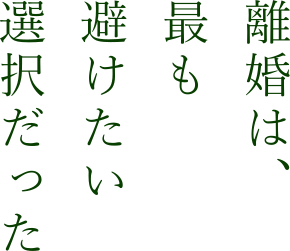
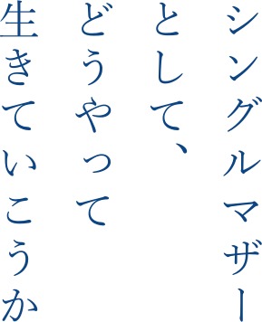
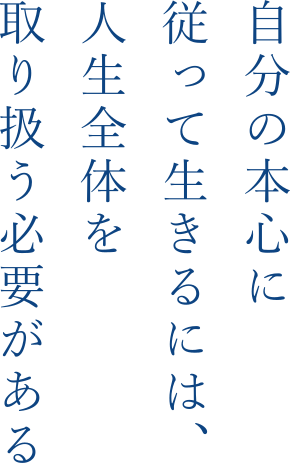
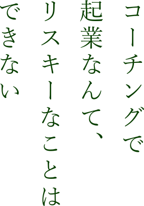
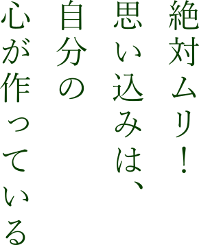

Story #02
土屋志帆の物語
離婚という経験
Story #02-1

26歳の時、結婚しました。
お互いにとても未熟で、自分の「見せたい顔」だけで繋がっていたのだと思います。きっと大丈夫、結婚ってこんな感じ？と夢を見るように、相手のリアルを見ずに希望を描いていました。
それが突然、私が臨月を迎える頃、夢が砂上の楼閣のように崩れていきました。
知らないことが次々に分かり、私はその情報を受け止めきれず、新しい命をこれから育てるという時に、おおらかに相手に接することができませんでした。
自分の"親として"の「～なはず」「～なべき」という枠に捕らわれていた私に対して、相手との距離はどんどん遠ざかり、対話ができなくなっていきました。
私の中では「離婚」は一番避けたい道でした。
生まれたばかりの子どもの事を思っても、自分の人生にとっても簡単に離婚なんてするべきじゃない。自分たちの結婚式をお祝いしてくれた人たちに顔向けができない。どうにか立ち直して、ここから作り直していくしかないと思ってました。それには、辛くても話し合わなきゃ前に進めない！何よりも子どもがいるんだから当然だろう、と思っていました。でもその願いは叶いませんでした。
毎日生きているこの小さな命に、真夜中も授乳して、おむつを変えながら、私は親としてこれを放棄できない！と、どこかに叫びたい気持ちでした。
― 吐くほどに辛い
という感情は後にも先にもこの経験だけでした。
離婚はしたくなかったけれど「対話」が成り立たなくなってしまったということは、私にとって関係性の破綻を意味しました。そうせざるを得ないと思ってした「離婚」はとても重く苦しい選択でした。
傷んでいる部分に蓋をして
Story #02-2

復職しても離婚したことを公には言えませんでした。大丈夫なふりをしながら、ぜんぜん大丈夫じゃない。触れてほしくないオーラをまとっていたと思うし、触れられたらいつだって涙が溢れてきそうでした。他の家族連れの姿を見るだけでチクチクと胸が傷んでいました。
シングルマザーとして、どうやって生きていくんだろう、これから。。。スキルもキャリアも大したものがなくて、子連れシングルマザーって企業のお荷物？
何も持っていない私は、転職もできない、、と思っていました。
フルタイムで働いていて、帰宅が夜10時、母親として何もできていないな、このままではマズイな、と思っていました。働き方を見直していかなくては、、少しずつそんな事を考えながら、本当に傷んでいる部分にはフタをして、大丈夫なフリして生きていました。
コーチングを受けた衝撃
Story #02-3

自分のライフイベントを通じて、働く個人の意志決定に興味が湧いていたこともあり、産前産後の時期にGCDF（Global Career Development Facilitator）というキャリアカウンセラーの資格を取得しました。
復職して、「働き方を自分もとうとう見直さなくては」という時に、ある社外のワークショップに参加しました。その会を主催されていた方がプロコーチで、はじめはコーチという職業を全く知らず、好奇心からその人のコーチングを受けてみることにしました。
自分がコーチングを受けた経験から、自分の選択に対して、これでよかったんだと思えるようになっていきました。キャリアカウンセリングでは"キャリア"を扱うけれど、子どもを育てながら自分の本心に従って生きることと、お金を稼ぐことは、そもそも"キャリア"という言葉だけではくくれなくて"人生全体を取り扱う必要がある"そう思って、私もコーチングを学ぶことを決意しました。
そのコーチングのコースの中で最もインパクトを受けて、そしてコーチになろうということを決意したのが「プロセスコーチング」です。プロセスコーチングとは、自分の中にある「共にいられない感覚」「蓋をしたい感情」に向き合い、味わい尽くすことでその奥の願いを見ていくコーチングのこと。自分の中のドロドロとしている部分、蓋をして触らずにいた部分をプロセスコーチングで、グッと身体感覚を使いながら扱いました。
え、そこに触れるの！？マジ？、、という感覚で怖くもありました。
「離婚して子どもを抱えてお先真っ暗、それはどんな感じ？」と、体感覚で味わいきる。体感覚というのは、実際に身体でその感覚をやってみるということ。ぎゅっと体育座りで突っ伏して、真っ暗闇を見ていました。呼吸もできないくらい下を見て、、孤独な感覚。数秒だったかもしれませんが、とっても長く感じました。
しばらくじっとその姿勢をしていると、、お腹の中の豆粒から不思議と・・・「ママ苦しいよ」・・・と小さな声が聞こえたのです。そんな声が出てくるとも思っていなかったので、驚きましたが「あ、ごめん、ごめん」と言いながら、ギュッと身体を小さく縛っていた手を解きました。
起こった事は、この一瞬。
私がこの姿勢でいるってことは、子供も苦しいんだ。そっかそっか、ごめんね。自分はもうココにいるのは辞めよう、と思いました。自分で選択できるんだ、ということも分かりました。
「あぁ、世の中のたくさんのシングルマザーに伝えたい。大丈夫なフリして漠然とした不安を抱えながら生きている人全てに伝えたい。怖いけど、一回本当にパンドラの箱を開けて、味わいきると、底を打って浮上できるんだ」って。
本当に見たくないものを見に行くには、勇気がいるし準備が必要。でも蓋をしていることを味わいきると、底を打って浮上できる、それがこの体験を通じて学んだことでした。見ないフリしている事に向き合わないでいると、本当の自分の人生は始まらない。それは、今の私のコーチングの原点になっています。
働き方を模索しながら
Story #02-4

コーチングを必要としている人がいる。
自分の体験から、まずは、この行き場のない気持ちを抱えているのはシングルマザーだと思いました。不安を常に抱えているのに平気なふりしている人たちに「蓋を開けてちゃんと底を見たほうが浮上できるよ！」と伝えたい。そんな強い志のような声と共に前に進む力となりました。
同時にこれは「不都合な真実」でもありました。コーチングで食べてなんていけないよ。シングルマザーは貧困率も高く、お金に困っているのにコーチングなんて受けられないよ。小さい子どもを抱えて、どうやって仕事もしてコーチングもして子育てもするの？プロになったって、その後やっていける人は一握りでしょ。私はシングルマザー、食いっぱぐれできない。だからプロになってもいきなりコーチングで起業なんてリスキーなことはできない！こんな声がわんわん響いていました。
それでも会社員を続けながら、上級コース（プロコーチの資格を取得するコース）にエントリーしました。正直ハードだったけれど、自分が目指したい姿に向かっていることは自分への自信にもなりました。副業がOKな会社に転職も考えて、転職活動もしていました。毎日求人情報を見ていましたが、いいなと思う仕事でも副業を認める募集はひとつもありませんでした。
ある日、古巣の先輩がFacebookで「コーチングを勉強しててキャリアカウンセリングできる人いないかな？」とつぶやいていました。驚いてすぐにアクションしました。給料は下がるけれど、「コーチングが出来るなら何でもしよう！」ジタバタしてみるとご縁はやってくるんだというシンクロニシティに震えました。
プロになるまでやるの？独立なんてできるの？
会社の規模が小さくなることや、給与が下がることはとても怖い選択で、マイコーチとセッションをしたのを今でも覚えています。その上で、転職の道を選びました。
正式に副業としてコーチをしてもいいという声を貰い、9～17時で人事やキャリアカウンセリングの仕事をしながら、夜はコーチングのセッションをするという二足のわらじ生活が始まりました。
やりたいことを抑圧せずに、自分に許可すると、それをさせて貰えている環境にも感謝が湧く。今まではコーチングを学んでいることを会社で出さず、母としての顔も出さないでいましたが、転職をして、コーチングをしていることも、母であることもオープンにしていけるようになりました。境界線が薄くなりました。あれもこれもジブン、という全てのジブンを統合して認めていけるというプロセスは、自分の中にあるリソースを活かせる場所が増えることで、忙しかったけれど、心の健康状態はぐんぐんよくなっていきました。
コーチングを学んでいきなり独立する人ももちろんいます。でも私はそうではありませんでした。どこまでやれるかなんて分からないけど、やってみたいという灯火がある限り小さくてもやり続ける。自分の中の小さな芽を育んでいく。
そうやって、個人事業主になり、初めて自分のホームページを手作りで作ったり、確定申告をしたり、一つずつ自分でやるという経験はサラリーマンの世界しか知らなかった私には新しく刺激的でした。そして、正社員の仕事をしながら晴れてプロコーチの資格（CPCC：Certified Professional Co-Active Coach）を取得しました。

さて、ここからどうする！？
ここまでもなかなか大変な道のりではありましたが、プロコーチになったからと言って、当たり前だけれども潤沢にクライアントがいるわけではありません。資格取得という意味では、時間とお金をかければ到達する世界といえば、そうでした。
分かっちゃいたけれど、目の前に大海原が広がる感覚で、私はどこに向かうんだろう、どんなコーチとして立つのだろう、という問いをまざまざと突きつけられました。そして、行くことを決意したのが「コーアクティブ・リーダーシップ・プログラム」。目が飛び出る程金額が高いプログラムだったし、小さい子どもがいながら1週間も家を不在にすることなんてできない！と、ずっと見ないフリをして脇に置いていました。
当時、幼稚園に通う息子を親に預けて1週間も家を離れるということは”母親”としてしてはならないことだと思っていました。そんな事を親にお願いしても理解されるはずがない、というのが自分の一番のボトルネックだったのです。
「絶対ムリ！」という感情に気がつくと、何故か今まで見ないフリしていたものを”直視”できるようになってくる。なんでだろう、、笑
ふと親に「11月から研修に1週間参加したいんだけど、、、」と伝えてみたら、母親が手帳を取り出して、いつからいつまでかと日程を確認しました。「えっ！いいの！？」と内心かなり驚きました。思い込みというのは、自分の心が作っていたのです。そして、リーダーシッププログラムに行くことになりました。